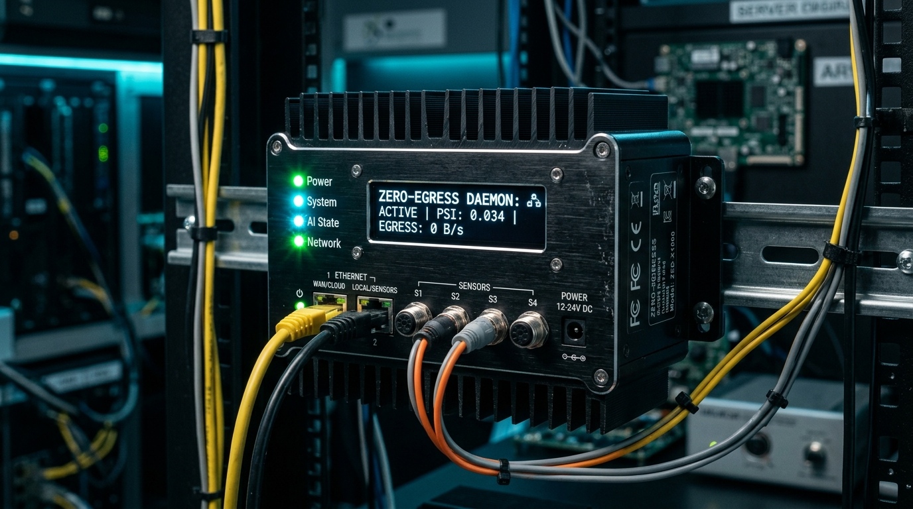

Zero-Egress Drift Detection for Edge AI
Real-time statistical drift monitoring with mathematical guarantees. Detect covariate shifts locally on constrained edge hardware, eliminating raw data egress while triggering automated AWS serverless retraining.
The Silent Edge ML Decay Problem
Models deployed on edge devices (drones, robots, smart sensors) experience accuracy degradation due to real-world distribution drift. Current industry solutions are fundamentally broken.
Stream All Raw Data to Cloud
Continuously uploading every raw inference vector to Amazon SageMaker or Databricks for cloud monitoring.
- ❌ Massive Bandwidth: 64 MB+/day per device over metered cellular LTE/5G.
- ❌ Data Egress Tax: Heavy telecommunications & AWS data transfer fees.
- ❌ Privacy Risk: Raw sensor & PII data leaves edge, violating GDPR/HIPAA.
Blind Periodic Retraining
Retraining models on a fixed calendar schedule (e.g. every Sunday at midnight) regardless of actual accuracy.
- ❌ Wasted Compute: GPU clusters burn resources retraining models that haven't drifted.
- ❌ Lagging Reaction: Sudden Monday shifts go completely undetected until Sunday night.
- ❌ No Performance Visibility: Zero real-time insight into edge performance.
Zero-Egress Statistical Engine
Two-tier local statistical verification running on-device with zero raw data transmission and automated AWS triggers.
- ✅ Zero Egress: 0 bytes sent during normal steady-state inference.
- ✅ Sub-Kilobyte Alerts: Only ~350 bytes sent when mathematically confirmed drift occurs.
- ✅ Instant Retraining: AWS EventBridge & Step Functions immediately orchestrate retraining.
- ✅ Full Privacy: Raw observations never cross the local device boundary.
Baseline Profiling & Covariate Shift
How training distributions are profiled into compact statistical signatures, and how real-world environmental shifts are simulated.
California Housing Dataset
We calibrate our baseline on 20,640 real observations across 8 features. Each feature is discretized into 10 equal-width quantile bins with empirical probability profiles stored in baseline_profile.json.
Simulating Covariate Shift
In operational environments, sensor calibration decays or populations change. In our demo, injecting covariate shift applies an immediate $+3.5\sigma$ mean displacement:
Notice how the distribution shifts from the lower income bins into the extreme upper tail, triggering our two-tier detector.
Distribution Histogram: Empirical Baseline vs. Covariate Shift (+3.5σ)
Two-Tier Drift Verification Methodology
Combining $O(B)$ quantile binning with non-parametric hypothesis testing to deliver high-speed detection with zero false positives.
Population Stability Index (PSI)
Measures the Kullback-Leibler divergence between actual stream observations ($A_i$) and baseline training probabilities ($E_i$) across $B$ bins:
Laplace Smoothing (+0.5 Pseudocount): Prevents empty tail bins from causing $\ln(0)$ divergence, stabilizing clean measurements below 0.10.
| PSI Range | Status | Action |
|---|---|---|
| $\text{PSI} < 0.10$ | Healthy | Normal operation, 0 bytes egress |
| $0.10 \le \text{PSI} < 0.20$ | Slight Shift | Watchlist, keep monitoring |
| $\text{PSI} \ge 0.20$ | Significant Drift | Trigger Tier 2 KS-Test verification |
Two-Sample Kolmogorov-Smirnov Test
A non-parametric test comparing the empirical cumulative distribution functions (ECDF) of the baseline sample $F_1(x)$ and current buffer $F_2(x)$:
Under the null hypothesis $H_0$, both samples originate from the same distribution. If the asymptotic p-value satisfies:
Why Two Tiers? Tier 1 operates in $O(B)$ time on every window. Tier 2 mathematically validates significance ($p < 0.05$), completely eliminating costly false cloud alarms.
Live Edge-to-Cloud Demonstration
Experience real-time local edge inference, covariate shift injection, sub-kilobyte alert transmission, and live AWS serverless triggering.
AWS Serverless Retraining Architecture
What happens when drift is verified: automated serverless event routing, lineage archiving, and closed-loop model retraining.
ModelDriftDetected custom event.Closed-Loop Model Redeployment
Once the retrained model artifact passes validation benchmarks, an automated deployment pipeline distributes the updated weights back to the edge container. As the edge device inferences using the new weights, PSI immediately drops back below 0.10, returning the device to steady-state zero egress.
Hardware Profile, Financials & Use Cases
Real-world performance footprint on constrained edge silicon and concrete bandwidth savings across fleet deployments.

| Operational Dimension | Traditional Cloud Streaming | Zero-Egress Edge Engine | Net Improvement |
|---|---|---|---|
| Daily Inferences | 1,000,000 / day | 1,000,000 / day | Equivalent Throughput |
| Raw Data Transmitted | 64.0 MB / device / day | 0.0 MB (steady state) | 100% Egress Cut |
| Alert Payload Size | N/A (Stream continuous) | 384 Bytes (compressed) | 99.999% Payload Reduction |
| Cellular Egress Cost | $15 - $45 / device / month | < $0.01 / device / month | > 99% Direct Cost Savings |
| PII & Regulatory Exposure | High Risk (Public Internet Transit) | Zero Egress (100% Local) | Full Privacy Guarantee |